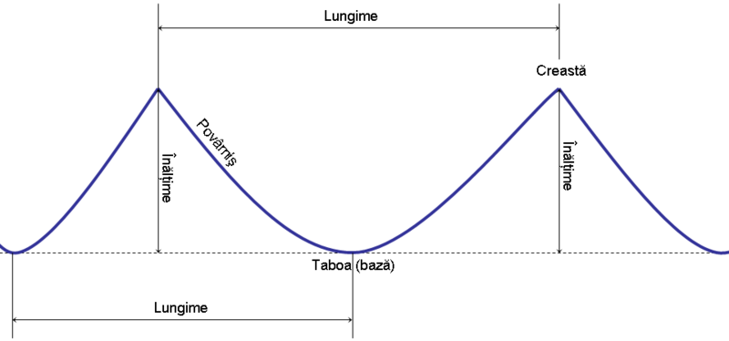

Valul este unda formată la suprafața mărilor sau oceanelor prin mișcarea oscilatorie a apei, datorită vântului sau cutremurelor.
Un val este o ondulație a unei suprafețe întinse de apă (lac, mare, ocean), ca rezultat al mișcărilor de oscilație determinate de acțiunea vântului, de cutremure, de variația bruscă a presiunii atmosferice, de atracția Lunii și Soarelui și de deplasarea unei nave prin apă.
-
Se caracterizează prin:
- lungime de undă: distanța dintre două creste succesive;
- amplitudine: înălțime deasupra suprafeței calme;
- înălțime: dublul amplitudinii;
- perioadă: intervalul de timp necesar parcurgerii unei lungimi de undă;
- frecvență: numărul de perioade pe secundă.
-
După cauzele care le dau naștere, deosebim:
- a) valuri de vânt;
- b) valuri seismice;
- c) valuri anemobarice;
- d) valuri de maree;
- e) valuri de navă.
Insert text4
Insert text5
Insert text6
Insert text7
Insert text8
Insert text9
Insert text10
Insert text11
Insert text12
Insert text13
-
Insert subtitle2
Insert text14